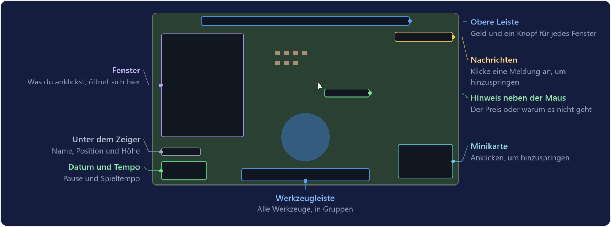

Der Bildschirm
Die Leisten, die Fenster und der Hinweis neben der Maus.
Alles erreichst du über drei Stellen: die obere Leiste, die Werkzeugleiste unten und den Hinweis, der der Maus folgt.


| Wo | Was es tut |
|---|---|
| Obere Leiste | Dein Bargeld (klicke darauf für Finanzen) und ein Knopf für jedes Fenster. |
| Datum und Tempo | Das Datum unten links, mit Pause und den Spieltempos. |
| Werkzeugleiste | Untersuchen, Straßen, Eisenbahn, Häfen, Landschaft, Abreißen, Rückgängig und Fahrzeug. Eine Gruppe öffnet über der Leiste eine Reihe ihrer Werkzeuge. |
| Minikarte | Die ganze Welt in der Ecke. Klicke darauf, um dorthin zu springen. |
| Nachrichten | Meldungen zu deiner Firma erscheinen, wenn etwas passiert. Klick eine an, um zum betreffenden Ort zu springen; Nachrichten zu Zielen, Subventionen und Bitten öffnen die Ziele. Das Nachrichtenfenster bewahrt sie auf, und unter Alle Nachrichten siehst du auch, was Konkurrenten und andere Städte tun. |
Der Hinweis neben der Maus
- Vor dem Bauen zeigt er den Preis für ein Feld Straße, Gleis, Oberleitung oder Brücke.
- Beim Ziehen zeigt er in Grün den Gesamtpreis und was du baust.
- Wenn etwas nicht baubar ist, erscheint er in Rot und sagt warum: ein Gebäude im Weg, zu steiler Boden, zu wenig Geld oder ein Gemeinderat, der Nein sagt.
Dinge ansehen
- Klicke mit Untersuchen (1) auf ein Fahrzeug, eine Station, eine Industrie oder ein Gebäude, um sein Fenster zu öffnen. Zeig auf etwas, um zu sehen, was es ist.
- Lass mit Untersuchen den Zeiger einen Moment auf einer Station, einem Stadtnamen, einem Betrieb, einem Fahrzeug oder einem Gebäude ruhen, und daneben zeigt eine Karte die wichtigsten Zahlen: wartende Fracht und Bewertungen, Einwohner und was der Gemeinderat von dir hält, was ein Betrieb hergestellt hat und wie viel abtransportiert wurde, Ladung und Gewinn eines Fahrzeugs. In den Einstellungen lassen sich die Karten abschalten.
- Mit einem Bauwerkzeug in der Hand nennt die Ecke unten links, was unter dem Zeiger liegt, mit Koordinaten und Höhe.
- Dieses Fenster sitzt links. Ein Klick auf etwas anderes ersetzt es, und ein Zurück-Pfeil in der Titelleiste führt zum vorher Angesehenen zurück.
- Fenster wie Fahrzeuge, Finanzen oder diese Anleitung öffnen sich einzeln: Ein neues ersetzt das vorige, und erneutes Drücken der Taste oder des Knopfs schließt es.
- Drück die Pinnnadel eines Fensters, damit es offen bleibt, egal was du sonst öffnest. In den Einstellungen gibt es einen Schalter, mit dem alle Fenster offen bleiben.
- Städte und Industrien tragen kleine Frachtsymbole: hohl für das, was sie brauchen, gefüllt für das, was sie herstellen.
- Zieh ein Fenster an seiner Titelleiste. Esc schließt das oberste.
Listen deines Besitzes
- Fahrzeuge (V) listet deine Flotte mit dem Gewinn jedes Fahrzeugs. Sortiere nach Braucht Aufmerksamkeit, um die mit Problemen zuerst zu sehen.
- Stationen (Ctrl+S) listet jede Station mit der wartenden Fracht und ihren Bewertungen.
- Linien (Ctrl+L) listet deine Linien mit ihren Halten, Fahrzeugen und ihrem Gewinn. Siehe Linien.
- Probleme (I, das Warnschild mit einer Zahl) listet alles auf, was feststeckt oder schiefläuft, jeweils mit dem Grund und einem Knopf, der es behebt oder dich hinbringt.
- Klick in diesen Listen eine Zeile an, um sie zu öffnen, oder ihren Zeigen-Knopf, um sie auf der Karte zu sehen. Unter Probleme zeigt ein Klick auf eine Zeile den Ort, und der Knopf daneben behebt es.
- Ziele (J, die Fahne) zeigt deine ersten Schritte, deine Erfolge, wie nah das Ziel deiner Firma ist und die angebotenen Subventionen und Bitten der Städte. Siehe Ziele und Erfolge.
Speichern
- F5 speichert sofort, und F9 lädt diesen Stand wieder.
- Das Spielmenü (Esc) speichert unter einem Namen deiner Wahl und lädt jeden Spielstand.
- Das Spiel speichert auch selbst, alle drei Monate, sofern du das nicht in den Einstellungen änderst.
Alle Tastenkürzel stehen unter Steuerung.